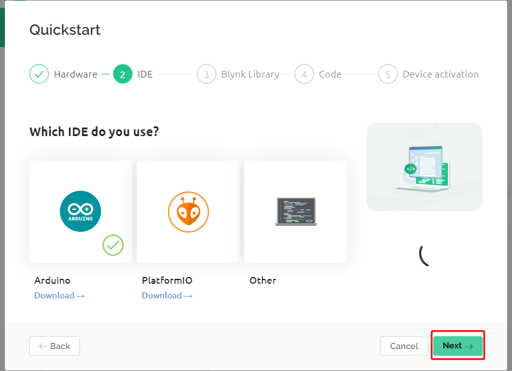
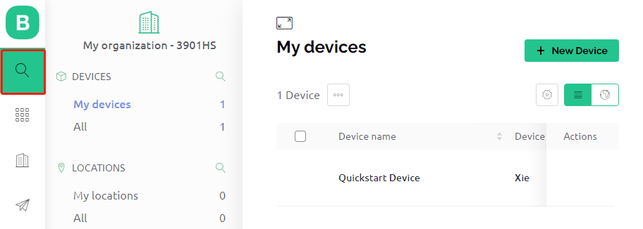

注釈
こんにちは、SunFounderのRaspberry Pi & Arduino & ESP32愛好家コミュニティへようこそ！Facebook上でRaspberry Pi、Arduino、ESP32についてもっと深く掘り下げ、他の愛好家と交流しましょう。
参加する理由は？
エキスパートサポート：コミュニティやチームの助けを借りて、販売後の問題や技術的な課題を解決します。
学び＆共有：ヒントやチュートリアルを交換してスキルを向上させましょう。
独占的なプレビュー：新製品の発表や先行プレビューに早期アクセスしましょう。
特別割引：最新製品の独占割引をお楽しみください。
祭りのプロモーションとギフト：ギフトや祝日のプロモーションに参加しましょう。
👉 私たちと一緒に探索し、創造する準備はできていますか？[ここ]をクリックして今すぐ参加しましょう！
1.2 Blynkの設定
BLYNK のページに移動し、 START FREE をクリックします。
ご自身のメールアドレスを入力し、アカウントを登録します。

メールアドレスに届いたメールで、アカウント登録を完了させます。

その後、Blynk Tour が表示されるので、Blynkについての基本情報を把握するためにご覧ください。

次に、この Quick Start でテンプレートとデバイスを作成する必要があります。Let's go をクリックします。

ハードウェアと接続タイプを選択します。

必要なIDEが指定されますが、Arduino IDE を推奨します。

必要なライブラリが表示されますが、ここで推奨されるライブラリには問題があるため、他のライブラリを手動で追加する必要があります（後述）。ここで Next をクリックし、新しいテンプレートとデバイスが作成されます。

次は、関連するコードをアップロードしてBlynkにボードを接続する手順ですが、先に提供されたライブラリに問題があるため、再度他のライブラリを追加する必要があります。したがって、Quick Start を停止するために Cancel をクリックします。

Search ボタンをクリックすると、先ほど作成した新しいデバイスが表示されます。

この Quickstart Device に移動して Device Info をクリックすると、Device info ページに
TEMPLATE_ID、DEVICE_NAME、およびAUTH_TOKENが表示されるので、後でコピーする必要があります。